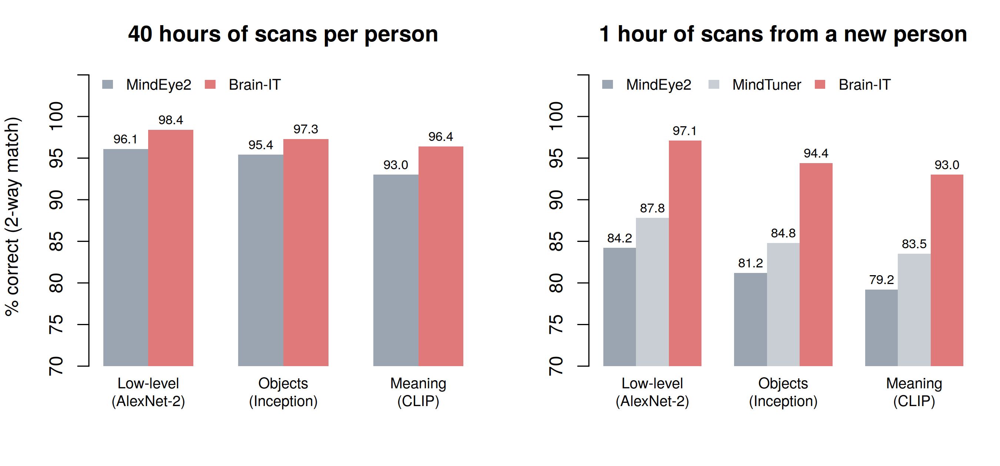

Tylerisyoung.Substack.com
Twitter.com/TylerisYoung
_________________________
10/07/2026
Researchers at the Weizmann Institute of Science in Israel have built a system that looks at a brain scan and paints back the picture the person was looking at. It is called Brain-IT, and it is the most accurate tool of its kind yet published.
The team, led by computer scientist Michal Irani, trained it on the Natural Scenes Dataset: high-resolution fMRI scans of eight volunteers who each viewed about 9,000 photos over roughly 40 hours in the scanner. The results were presented at ICLR 2026, and MIT Technology Review covered them on October 1.
How it works
Brain-IT splits the job in two. One branch reads the brain for structure: where things sit in the frame, rough shapes and colors. The other reads it for meaning: a dog, a bathtub, a plate of food. Both feed an image-generating diffusion model, the same family of AI behind tools like Midjourney, which draws the final picture.
The trick that makes it cheap is sharing. Brains differ, but the team found clusters of voxels (tiny 3D pixels of brain tissue) that do the same job across people, such as one region that lights up for food and another for sports. Because the model learns those shared clusters once, a new person doesn’t have to start from zero.
The data
On the standard benchmarks the field uses, Brain-IT beats every earlier method, including MindEye2, the previous leader. The bigger story is the second chart: with one hour of a new person’s scans, it lands within about a point of what the previous leader achieves with all 40 hours.

Pixel-level accuracy rose too: correlation with the original image went from 0.32 for MindEye2 to 0.39 for Brain-IT. An hour in an fMRI machine runs roughly $600 to $1,000, so cutting calibration from 40 hours to one turns a $24,000-to-$40,000 calibration into an afternoon.
What it still gets wrong
It is not a camera. A cake came back as three sandwiches. A dog in a bathtub came back as a goat in a bathtub. The gist survives, the details drift. And it only works on a cooperating person lying still in a multimillion-dollar magnet.
Why it matters
The team wants to move to video, sound, imagined pictures and dreams, and eventually to EEG, the cheap cap of electrodes that fits in a backpack. That is where this stops being a lab curiosity. Irani’s group sees a path to letting locked-in patients communicate. Neuroethicist Marcello Ienca told MIT Technology Review an EEG version would be a “game changer” and warned courts might one day treat reconstructions as evidence.
The last private place a person has is the inside of their head. For now, getting in still takes an hour, a magnet and your consent. The trend line says each of those requirements is getting smaller.
Sources
Beliy, R., Zalcher, A., Kogman, J., Wasserman, N., & Irani, M. “Brain-IT: Image Reconstruction from fMRI via Brain-Interaction Transformer.” ICLR 2026. arXiv:2510.25976
Hamzelou, J. “An AI ‘mind-reading’ tool can reconstruct what you’re looking at based on a brain scan.” MIT Technology Review, October 1, 2026. Link